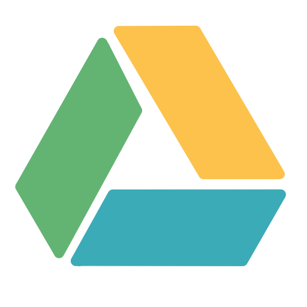

Gravação
A aula foi gravada para aqueles que não puderam estar presente assistir e quem desejar ver novamente.
Mas o vídeo por segurança está ficando no Google Drive de forma privada. Aqueles que desejarem assistir é só clicar na imagem abaixo que será direcionada para o Google Drive onde poderão perdir a acesso para assistir os vídeos.
